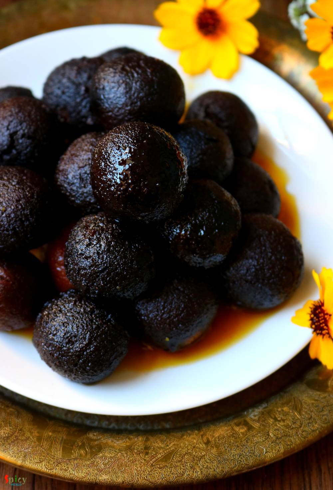

Simple and Easy Recipes
Suji Kala Jamun (Kalo Jaam)
By Arpita © 2016 Spicy World
Jun 12, 2019
Jun 12, 2019

Kala Jamun is nothing but a dark colored Gulab Jamun. If you fry the gulab jamun little longer they will become dark in color and that is Kala Jamun. It has a unique taste and falvor. Kala Jamun tastes delicious if you let them sit in sugar syrup for overnight. I made them with semolina this time. Recipe was very simple and easy. One important tip is make sure the oil temperature is medium hot while frying every batch of Kala Jamun. Do give this recipe a try.
")
Ingredients
- 1 cup of full cream milk.
- 1 cup of semolina.
- 3 Teaspoons of sugar.
- 3 Tablespoons of ghee.
- 4 Tablespoons of full cream milk powder.
- Pinch of yellow or pink food color.
- 2 cups of water.
- 1 cup of sugar (for syrup).
- 3 green cardamom.
- Pinch of saffron.
- Half liter of vegetable oil.
{kind=link}
{kind=link}
Steps
In a sauce pan add water, 1 cup of sugar, green cardamom and saffron. Mix well and cook on medium flame for 10-15 minutes.
Sugar syrup is ready, keep it aside.
In another pan, heat the milk.
Add 3 Tablespoons of sugar and 1 Tablespoons of ghee. Mix well and cook 2 minutes.
Then add half of the semolina, start mixing immediately. Otherwise there will be lumps.
Add the semolina in 2-3 batches. Cook on low flame for 3-4 minutes.
Then turn off the heat and let it cool down little bit.
Take the mixture out in a plate.
Mash well with your hand for 2 minutes.
Then add remaining ghee, milk powder and food co Mix well and again mash for 2-3 minutes.
Make a soft dough.
Then make small crack free balls out of the semolina dough.
Drop them carefully in medium hot oil.
If the oil temperature is high then they will become hard from inside.
Fry 6-8 at a times on medium flame for 15-20 minutes.
When they will become dark in color take out from oil and drop them in hot sugar syrup.
Let them rest for overnight and then serve warm.
Additional Info
Recipe Category: Desserts
Recipe Cuisine: Indian
Preparation Time: 30 minutes
Cooking Time: 60 minutes
Serves: 5
Your kala jamun is ready to serve.
- Serve this warm ..
{kind=link}
All Images and Recipes are copyrighted to Spicy World.
For more recipes visit us at http://spicyworld.in
Leave Your Comments